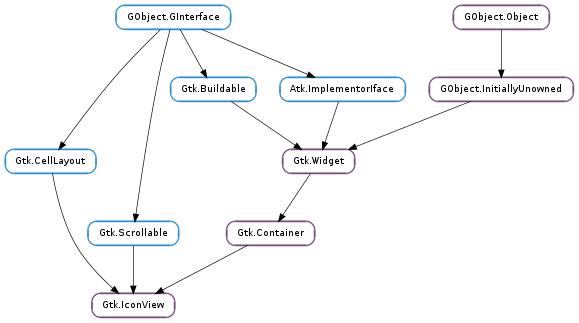

| Name | Type | Flags | Description |
|---|---|---|---|
| activate-on-single-click | bool | r/w | Activate row on a single click |
| cell-area | Gtk.CellArea | r/w/c | The Gtk.CellArea used to layout cells |
| column-spacing | int | r/w | Space which is inserted between grid columns |
| columns | int | r/w | Number of columns to display |
| item-orientation | Gtk.Orientation | r/w | How the text and icon of each item are positioned relative to each other |
| item-padding | int | r/w | Padding around icon view items |
| item-width | int | r/w | The width used for each item |
| markup-column | int | r/w | Model column used to retrieve the text if using Pango markup |
| model | Gtk.TreeModel | r/w | The model for the icon view |
| pixbuf-column | int | r/w | Model column used to retrieve the icon pixbuf from |
| reorderable | bool | r/w | View is reorderable |
| row-spacing | int | r/w | Space which is inserted between grid rows |
| selection-mode | Gtk.SelectionMode | r/w | The selection mode |
| spacing | int | r/w | Space which is inserted between cells of an item |
| text-column | int | r/w | Model column used to retrieve the text from |
| tooltip-column | int | r/w | The column in the model containing the tooltip texts for the items |
| Name | Parameters | Return | Description |
|---|---|---|---|
| activate-cursor-item | bool | A keybinding signal which gets emitted when the user activates the currently focused item. Applications should not connect to it, but may emit it with GObject.signal_emit_by_name () if they need to control activation programmatically. The default bindings for this signal are Space, Return and Enter. | |
| item-activated | Gtk.TreePath | The ::item-activated signal is emitted when the method Gtk.IconView.item_activated () is called, when the user double clicks an item with the “activate-on-single-click” property set to False, or when the user single clicks an item when the “activate-on-single-click” property set to True. It is also emitted when a non-editable item is selected and one of the keys: Space, Return or Enter is pressed. | |
| move-cursor | Gtk.MovementStep, int | bool | The ::move-cursor signal is a keybinding signal which gets emitted when the user initiates a cursor movement. Applications should not connect to it, but may emit it with GObject.signal_emit_by_name () if they need to control the cursor programmatically. The default bindings for this signal include * Arrow keys which move by individual steps * Home/End keys which move to the first/last item * PageUp/PageDown which move by “pages” All of these will extend the selection when combined with the Shift modifier. |
| select-all | A keybinding signal which gets emitted when the user selects all items. Applications should not connect to it, but may emit it with GObject.signal_emit_by_name () if they need to control selection programmatically. The default binding for this signal is Ctrl-a. | ||
| select-cursor-item | A keybinding signal which gets emitted when the user selects the item that is currently focused. Applications should not connect to it, but may emit it with GObject.signal_emit_by_name () if they need to control selection programmatically. There is no default binding for this signal. | ||
| selection-changed | The ::selection-changed signal is emitted when the selection (i.e. the set of selected items) changes. | ||
| toggle-cursor-item | A keybinding signal which gets emitted when the user toggles whether the currently focused item is selected or not. The exact effect of this depend on the selection mode. Applications should not connect to it, but may emit it with GObject.signal_emit_by_name () if they need to control selection programmatically. There is no default binding for this signal is Ctrl-Space. | ||
| unselect-all | A keybinding signal which gets emitted when the user unselects all items. Applications should not connect to it, but may emit it with GObject.signal_emit_by_name () if they need to control selection programmatically. The default binding for this signal is Ctrl-Shift-a. |
| Name | Type | Access |
|---|---|---|
| parent | Gtk.Container | r |
Bases: Gtk.Container, Gtk.CellLayout, Gtk.Scrollable
Gtk.IconView provides an alternative view on a Gtk.TreeModel. It displays the model as a grid of icons with labels. Like Gtk.TreeView, it allows to select one or multiple items (depending on the selection mode, see Gtk.IconView.set_selection_mode ()). In addition to selection with the arrow keys, Gtk.IconView supports rubberband selection, which is controlled by dragging the pointer.
Note that if the tree model is backed by an actual tree store (as opposed to a flat list where the mapping to icons is obvious), Gtk.IconView will only display the first level of the tree and ignore the tree’s branches.
| Returns: | A newly created Gtk.IconView widget |
|---|---|
| Return type: | Gtk.Widget |
Creates a new Gtk.IconView widget
| Parameters: | area (Gtk.CellArea) – the Gtk.CellArea to use to layout cells |
|---|---|
| Returns: | A newly created Gtk.IconView widget |
| Return type: | Gtk.Widget |
Creates a new Gtk.IconView widget using the specified area to layout cells inside the icons.
| Parameters: | model (Gtk.TreeModel) – The model. |
|---|---|
| Returns: | A newly created Gtk.IconView widget. |
| Return type: | Gtk.Widget |
Creates a new Gtk.IconView widget with the model model.
| Parameters: | |
|---|---|
| Return type: |
Converts widget coordinates to coordinates for the bin_window, as expected by e.g. Gtk.IconView.get_path_at_pos ().
| Parameters: | path (Gtk.TreePath) – a Gtk.TreePath in icon_view |
|---|---|
| Returns: | a newly-allocated surface of the drag icon. |
| Return type: | cairo.Surface |
Creates a cairo.Surface representation of the item at path. This image is used for a drag icon.
| Parameters: |
|
|---|
Turns icon_view into a drop destination for automatic DND. Calling this method sets Gtk.IconView :reorderable to False.
| Parameters: |
|
|---|
Turns icon_view into a drag source for automatic DND. Calling this method sets Gtk.IconView :reorderable to False.
| Returns: | True if item-activated will be emitted on a single click |
|---|---|
| Return type: | bool |
Gets the setting set by Gtk.IconView.set_activate_on_single_click ().
| Parameters: |
|
|---|---|
| Returns: | |
| Return type: | bool, rect: cairo.RectangleInt |
Fills the bounding rectangle in widget coordinates for the cell specified by path and cell. If cell is None the main cell area is used.
This function is only valid if icon_view is realized.
| Returns: | the space between columns |
|---|---|
| Return type: | int |
Returns the value of the ::column-spacing property.
| Returns: | the number of columns, or -1 |
|---|---|
| Return type: | int |
Returns the value of the ::columns property.
| Returns: | True if the cursor is set. |
|---|---|
| Return type: | bool, path: Gtk.TreePath, cell: Gtk.CellRenderer |
Fills in path and cell with the current cursor path and cell. If the cursor isn’t currently set, then *@path will be None. If no cell currently has focus, then *@cell will be None.
The returned Gtk.TreePath must be freed with Gtk.TreePath.free ().
| Parameters: | |
|---|---|
| Returns: | whether there is an item at the given position. |
| Return type: | bool, path: Gtk.TreePath, pos: Gtk.IconViewDropPosition |
Determines the destination item for a given position.
| Return type: | path: Gtk.TreePath, pos: Gtk.IconViewDropPosition |
|---|
Gets information about the item that is highlighted for feedback.
| Parameters: | |
|---|---|
| Returns: | True if an item exists at the specified position |
| Return type: | bool, path: Gtk.TreePath, cell: Gtk.CellRenderer |
Finds the path at the point (x, y ), relative to bin_window coordinates. In contrast to Gtk.IconView.get_path_at_pos (), this function also obtains the cell at the specified position. The returned path should be freed with Gtk.TreePath.free (). See Gtk.IconView.convert_widget_to_bin_window_coords () for converting widget coordinates to bin_window coordinates.
| Parameters: | path (Gtk.TreePath) – the Gtk.TreePath of the item |
|---|---|
| Returns: | The column in which the item is displayed |
| Return type: | int |
Gets the column in which the item path is currently displayed. Column numbers start at 0.
| Returns: | the relative position of texts and icons |
|---|---|
| Return type: | Gtk.Orientation |
Returns the value of the ::item-orientation property which determines whether the labels are drawn beside the icons instead of below.
| Returns: | the padding around items |
|---|---|
| Return type: | int |
Returns the value of the ::item-padding property.
| Parameters: | path (Gtk.TreePath) – the Gtk.TreePath of the item |
|---|---|
| Returns: | The row in which the item is displayed |
| Return type: | int |
Gets the row in which the item path is currently displayed. Row numbers start at 0.
| Returns: | the width of a single item, or -1 |
|---|---|
| Return type: | int |
Returns the value of the ::item-width property.
| Returns: | the space at the borders |
|---|---|
| Return type: | int |
Returns the value of the ::margin property.
| Returns: | the markup column, or -1 if it’s unset. |
|---|---|
| Return type: | int |
Returns the column with markup text for icon_view.
| Returns: | A Gtk.TreeModel, or None if none is currently being used. |
|---|---|
| Return type: | Gtk.TreeModel |
Returns the model the Gtk.IconView is based on. Returns None if the model is unset.
| Parameters: | |
|---|---|
| Returns: | The Gtk.TreePath corresponding to the icon or None if no icon exists at that position. |
| Return type: |
Finds the path at the point (x, y ), relative to bin_window coordinates. See Gtk.IconView.get_item_at_pos (), if you are also interested in the cell at the specified position. See Gtk.IconView.convert_widget_to_bin_window_coords () for converting widget coordinates to bin_window coordinates.
| Returns: | the pixbuf column, or -1 if it’s unset. |
|---|---|
| Return type: | int |
Returns the column with pixbufs for icon_view.
| Returns: | True if the list can be reordered. |
|---|---|
| Return type: | bool |
Retrieves whether the user can reorder the list via drag-and-drop. See Gtk.IconView.set_reorderable ().
| Returns: | the space between rows |
|---|---|
| Return type: | int |
Returns the value of the ::row-spacing property.
| Returns: | A GLib.List containing a Gtk.TreePath for each selected row. |
|---|---|
| Return type: | [Gtk.TreePath] |
Creates a list of paths of all selected items. Additionally, if you are planning on modifying the model after calling this function, you may want to convert the returned list into a list of Gtk.TreeRowReference s. To do this, you can use Gtk.TreeRowReference.new ().
To free the return value, use: g_list_free_full (list, (GDestroyNotify) gtk_tree_path_free);
| Returns: | the current selection mode |
|---|---|
| Return type: | Gtk.SelectionMode |
Gets the selection mode of the icon_view.
| Returns: | the space between cells |
|---|---|
| Return type: | int |
Returns the value of the ::spacing property.
| Returns: | the text column, or -1 if it’s unset. |
|---|---|
| Return type: | int |
Returns the column with text for icon_view.
| Returns: | the index of the tooltip column that is currently being used, or -1 if this is disabled. |
|---|---|
| Return type: | int |
Returns the column of icon_view ‘s model which is being used for displaying tooltips on icon_view ‘s rows.
| Parameters: | |
|---|---|
| Returns: | whether or not the given tooltip context points to a item |
| Return type: | bool, x: int, y: int, model: Gtk.TreeModel, path: Gtk.TreePath, iter: Gtk.TreeIter |
This function is supposed to be used in a Gtk.Widget ::query-tooltip signal handler for Gtk.IconView. The x, y and keyboard_tip values which are received in the signal handler, should be passed to this function without modification.
The return value indicates whether there is an icon view item at the given coordinates (True ) or not (False ) for mouse tooltips. For keyboard tooltips the item returned will be the cursor item. When True, then any of model, path and iter which have been provided will be set to point to that row and the corresponding model. x and y will always be converted to be relative to icon_view ‘s bin_window if keyboard_tooltip is False.
| Returns: | True, if valid paths were placed in start_path and end_path |
|---|---|
| Return type: | bool, start_path: Gtk.TreePath, end_path: Gtk.TreePath |
Sets start_path and end_path to be the first and last visible path. Note that there may be invisible paths in between.
Both paths should be freed with Gtk.TreePath.free () after use.
| Parameters: | path (Gtk.TreePath) – The Gtk.TreePath to be activated |
|---|
Activates the item determined by path.
| Parameters: | path (Gtk.TreePath) – A Gtk.TreePath to check selection on. |
|---|---|
| Returns: | True if path is selected. |
| Return type: | bool |
Returns True if the icon pointed to by path is currently selected. If path does not point to a valid location, False is returned.
| Parameters: |
|
|---|
Moves the alignments of icon_view to the position specified by path. row_align determines where the row is placed, and col_align determines where column is placed. Both are expected to be between 0.0 and 1.0. 0.0 means left/top alignment, 1.0 means right/bottom alignment, 0.5 means center.
If use_align is False, then the alignment arguments are ignored, and the tree does the minimum amount of work to scroll the item onto the screen. This means that the item will be scrolled to the edge closest to its current position. If the item is currently visible on the screen, nothing is done.
This function only works if the model is set, and path is a valid row on the model. If the model changes before the icon_view is realized, the centered path will be modified to reflect this change.
Selects all the icons. icon_view must has its selection mode set to Gtk.SelectionMode.MULTIPLE.
| Parameters: | path (Gtk.TreePath) – The Gtk.TreePath to be selected. |
|---|
Selects the row at path.
| Parameters: |
|
|---|
Calls a function for each selected icon. Note that the model or selection cannot be modified from within this function.
| Parameters: | single (bool) – True to emit item-activated on a single click |
|---|
Causes the Gtk.IconView ::item-activated signal to be emitted on a single click instead of a double click.
| Parameters: | column_spacing (int) – the column spacing |
|---|
Sets the ::column-spacing property which specifies the space which is inserted between the columns of the icon view.
| Parameters: | columns (int) – the number of columns |
|---|
Sets the ::columns property which determines in how many columns the icons are arranged. If columns is -1, the number of columns will be chosen automatically to fill the available area.
| Parameters: |
|
|---|
Sets the current keyboard focus to be at path, and selects it. This is useful when you want to focus the user’s attention on a particular item. If cell is not None, then focus is given to the cell specified by it. Additionally, if start_editing is True, then editing should be started in the specified cell.
This function is often followed by gtk_widget_grab_focus (icon_view) in order to give keyboard focus to the widget. Please note that editing can only happen when the widget is realized.
| Parameters: |
|
|---|
Sets the item that is highlighted for feedback.
| Parameters: | orientation (Gtk.Orientation) – the relative position of texts and icons |
|---|
Sets the ::item-orientation property which determines whether the labels are drawn beside the icons instead of below.
| Parameters: | item_padding (int) – the item padding |
|---|
Sets the Gtk.IconView :item-padding property which specifies the padding around each of the icon view’s items.
| Parameters: | item_width (int) – the width for each item |
|---|
Sets the ::item-width property which specifies the width to use for each item. If it is set to -1, the icon view will automatically determine a suitable item size.
| Parameters: | margin (int) – the margin |
|---|
Sets the ::margin property which specifies the space which is inserted at the top, bottom, left and right of the icon view.
| Parameters: | column (int) – A column in the currently used model, or -1 to display no text |
|---|
Sets the column with markup information for icon_view to be column. The markup column must be of type GObject.TYPE_STRING. If the markup column is set to something, it overrides the text column set by Gtk.IconView.set_text_column ().
| Parameters: | model (Gtk.TreeModel or None) – The model. |
|---|
Sets the model for a Gtk.IconView. If the icon_view already has a model set, it will remove it before setting the new model. If model is None, then it will unset the old model.
| Parameters: | column (int) – A column in the currently used model, or -1 to disable |
|---|
Sets the column with pixbufs for icon_view to be column. The pixbuf column must be of type #GDK_TYPE_PIXBUF
| Parameters: | reorderable (bool) – True, if the list of items can be reordered. |
|---|
This function is a convenience function to allow you to reorder models that support the Gtk.TreeDragSourceIface and the Gtk.TreeDragDestIface. Both Gtk.TreeStore and Gtk.ListStore support these. If reorderable is True, then the user can reorder the model by dragging and dropping rows. The developer can listen to these changes by connecting to the model’s row_inserted and row_deleted signals. The reordering is implemented by setting up the icon view as a drag source and destination. Therefore, drag and drop can not be used in a reorderable view for any other purpose.
This function does not give you any degree of control over the order – any reordering is allowed. If more control is needed, you should probably handle drag and drop manually.
| Parameters: | row_spacing (int) – the row spacing |
|---|
Sets the ::row-spacing property which specifies the space which is inserted between the rows of the icon view.
| Parameters: | mode (Gtk.SelectionMode) – The selection mode |
|---|
Sets the selection mode of the icon_view.
| Parameters: | spacing (int) – the spacing |
|---|
Sets the ::spacing property which specifies the space which is inserted between the cells (i.e. the icon and the text) of an item.
| Parameters: | column (int) – A column in the currently used model, or -1 to display no text |
|---|
Sets the column with text for icon_view to be column. The text column must be of type GObject.TYPE_STRING.
| Parameters: |
|
|---|
Sets the tip area of tooltip to the area which cell occupies in the item pointed to by path. See also Gtk.Tooltip.set_tip_area ().
See also Gtk.IconView.set_tooltip_column () for a simpler alternative.
| Parameters: | column (int) – an integer, which is a valid column number for icon_view ‘s model |
|---|
If you only plan to have simple (text-only) tooltips on full items, you can use this function to have Gtk.IconView handle these automatically for you. column should be set to the column in icon_view ‘s model containing the tooltip texts, or -1 to disable this feature.
When enabled, Gtk.Widget :has-tooltip will be set to True and icon_view will connect a Gtk.Widget ::query-tooltip signal handler.
Note that the signal handler sets the text with Gtk.Tooltip.set_markup (), so &, <, etc have to be escaped in the text.
| Parameters: |
|
|---|
Sets the tip area of tooltip to be the area covered by the item at path. See also Gtk.IconView.set_tooltip_column () for a simpler alternative. See also Gtk.Tooltip.set_tip_area ().
Unselects all the icons.
| Parameters: | path (Gtk.TreePath) – The Gtk.TreePath to be unselected. |
|---|
Unselects the row at path.
Undoes the effect of Gtk.IconView.enable_model_drag_dest (). Calling this method sets Gtk.IconView :reorderable to False.
Undoes the effect of Gtk.IconView.enable_model_drag_source (). Calling this method sets Gtk.IconView :reorderable to False.